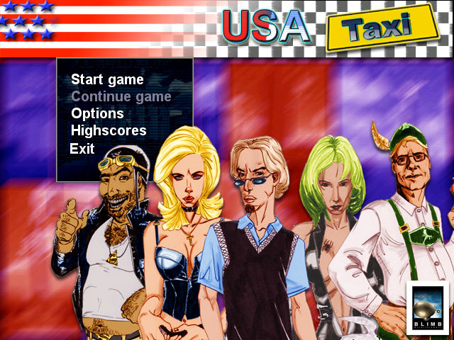
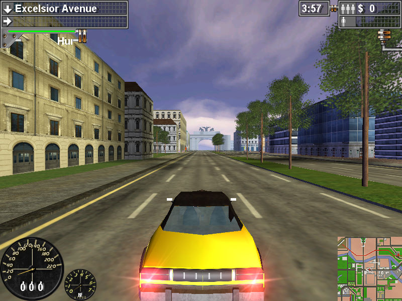

名稱：終極殺陣之瘋狂計程車美國篇 (USA Taxi／Taxi USA，英文版) 簡介：Blimb 2002年出品的計程車模擬遊戲，由Hemming AG代理發行。台灣由美思捷達代理 進口，但並未中文化，僅在光碟中加入簡單的中文說明文字檔。遊戲要求玩家必須在 限時內載客賺錢 [待補]。   保護：無 備註：VirtualBox需搭配WineD3D，但仍有貼圖錯誤，虛擬機建議使用VMware。

